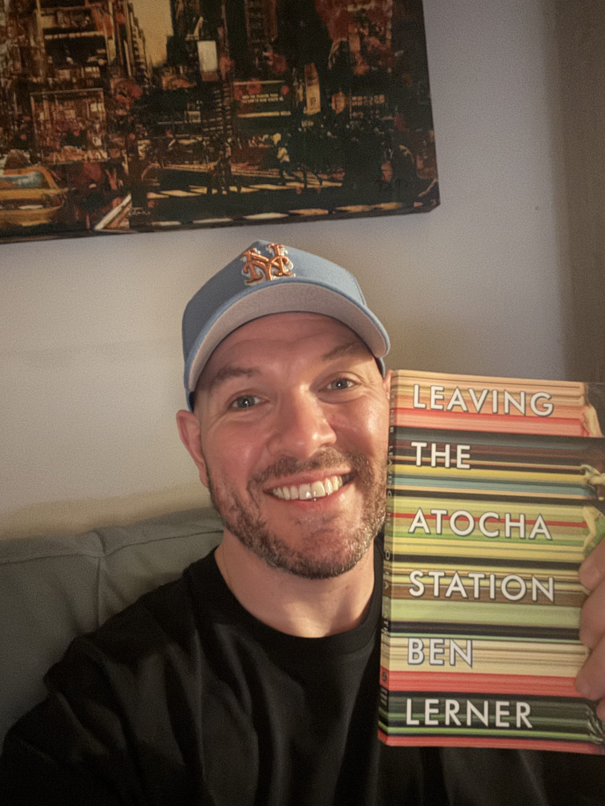
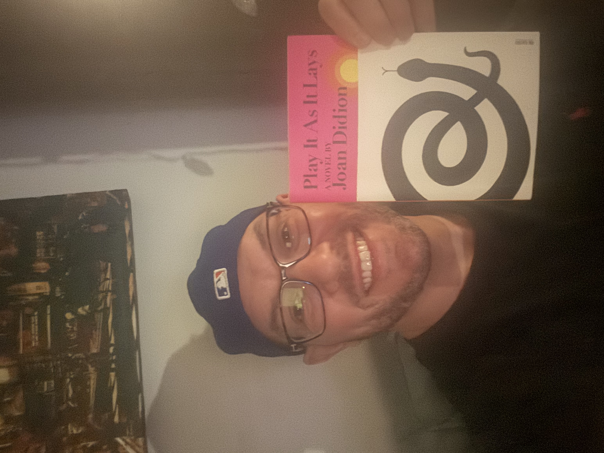
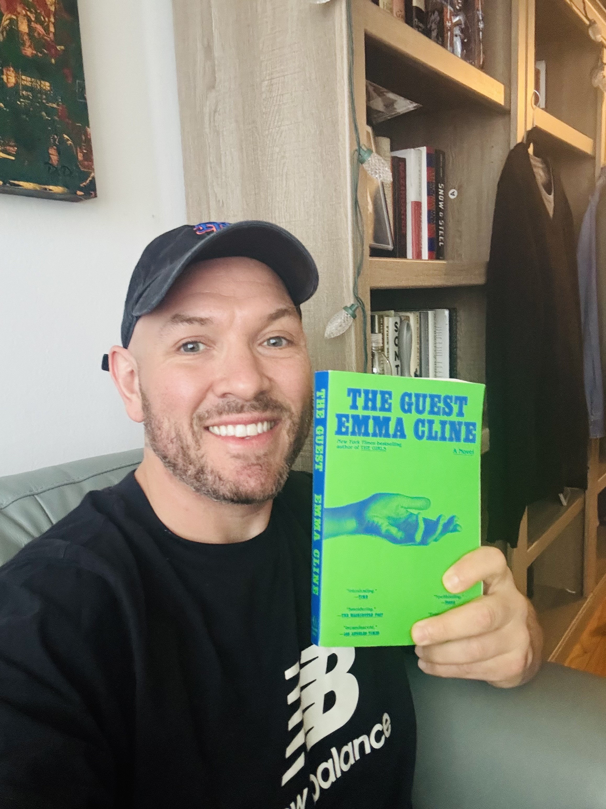
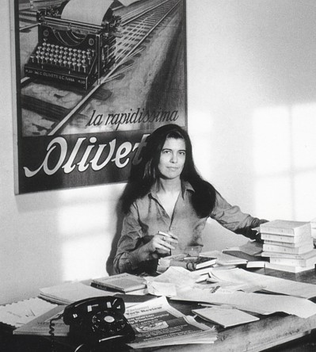
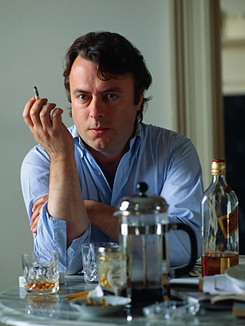
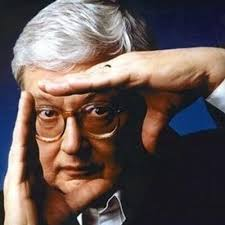

Welcome, friends! This webpage is dedicated to my thoughts on the books, restaurants, and movies (or television shows [probably Seinfeld]) that I enjoy on a daily basis. The homepage contains a chronological listing of my daily reviews, and the other pages feature lengthier discussions of the cultural and culinary experiences that make up my simple little life. Here you may find a few lines or a clever quip about a recent bite to eat, or you may run into an obnoxiously long essay about a great film or art installation I viewed. I hope you enjoy my writing and that you share it with your friends!

What is it about a rootless, ineffectual American man-child who embellishes his literary talents and feigns political passion, all to cope with the harrowing realization of his own pointlessness, that so tantalizes me? My similarities to the weak-willed poet protagonist of Ben Lerner’s debut novel notwithstanding, this is a bravura first work from an author whose oeuvre has lived up to the excitement created by Leaving the Atocha Station. Inspired by Lerner’s own writing fellowship in Spain around the time of the 2004 Atocha Station terror bombing, the novel is billed by some as a contemporary confessional or a millennial Künstlerroman. To me, though, it’s distinctly a period piece, an exploration of what it felt like to be anything other than a survivor or a soldier -- but especially an artist -- in America in the immediate shadow cast by the events of September 11, 2001. Which is to say an exploration of the shame many of us felt over the sudden triviality of our ambitions.

Maria is a frequently intoxicated B-list actress who lays about by beaches and pools and drifts quietly through anonymous Hollywood soirees, all while stoically enduring the abuses of her male handlers and the painful reality of her young daughter’s institutionalization. She rejects the basic allusions that sustain most of us -- love, family, community, companionship, hope -- and in certain moments seems to live only for the passing of time. Play it As It Lays reads much more like a rapid sequence of vignettes than a conventionally structured story with predictable arcs, climaxes, ebbs, and flows. This structure makes it immensely readable, and indeed portable (I found myself consuming most of the short chapters on lunch breaks and during quick commutes on the subway). More crucially, this fragmented surface underscores Didion’s vision of reality as fundamentally random, a mere collage of happenings that too often frustrates our need to glean meaning from experience.

Alex is a 21-year-old internet call girl and perennial drifter who offers up nothing about her origins and shows no interest in any future beyond the next few days or weeks. She survives on transactional relations with men. Some of these involve a nuanced exchange of companionship and physical intimacy for basic sustenance, while others are premised on the agreed-upon exchange of cash for sex. When one such arrangement comes crashing down, Alex finds herself stranded in the Hamptons, where she gets along by manipulating a few unassuming locals, including an adoring and pimply-faced adolescent in one of the novel’s most shocking and depressing sequences. “She doesn’t know how she got this far out,” the omniscient narrator observes when Alex escapes to the shallow waters of a nearby Long Island beach to clean her body. The Guest is Didion-esque in both its simplicity and its undisguised meaning: that there isn’t always a clear explanation for where we are and what we've become. Cline understands that despite all of the Freud and related pop-psychology permeating the contemporary Zeitgeist, the threads connecting us to all of the previous moments of our lives are so clearly frayed and devoid any discernible continuity that it seems pointless, and frankly not all that interesting, to attempt to connect them.
Long ago, before I became a student inundated with tasks such as the creation of this website, I used to compose a year end review of the best films and books that I consumed during the preceding annum. You can take a look at one of my previous lists here. Now that I'm living off of government assistance following my years of courageous service to this nation, I suddenly have more time on my hands. So, I thought it would be a good use of this time to bring back the old end-of-year literature and film blog, albeit in abbreviated form. Also, I couldn't think of any other way to satisfy the requirement of building a "table" for this website project. Here's the list of my favorit books and movies of the year.
| Fiction | Non-fiction | Film |
| 1. Caledonian Road | 1. It Was Vulgar, It Was Beautiful | 1. Marty Supreme |
| 2. Mona Acts Out | 2. Poverty, By America | 2. Sinners |
| 3. Audition | 3. Elizabeth and Monty | 3. One Battle After Another |
Writers usually begin as readers. The desire to put your thoughts into words usually starts with a fascination by the way that others express themselves in writing. Aside from one foray into fiction, which you can find on this site, I’ve mostly attempted to write literary criticism, blurbs and short essays commenting on the things I’ve read and observed. This interest began in my college days when I encountered the dozen or so essayists, critics, and critical theorists who I continue to rely on for inspiration, and perhaps a little of subconscious appropriation, today. Among these writers, three stand out: the novelist and cultural critic Susan Sontag, the debater and prolific essayist Christopher Hitchens, and the legendary film critic Roger Ebert. Click on their photos below to read the works by these authors that I continue to turn to in times of writer’s block:


